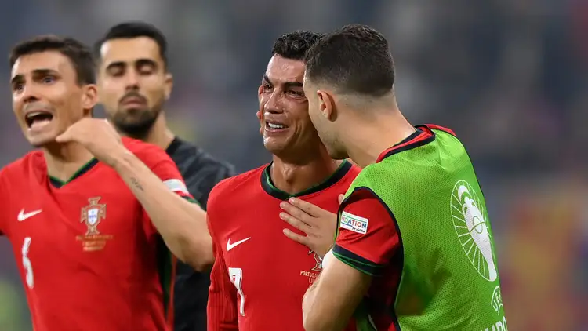
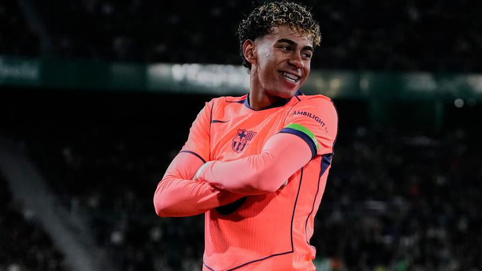
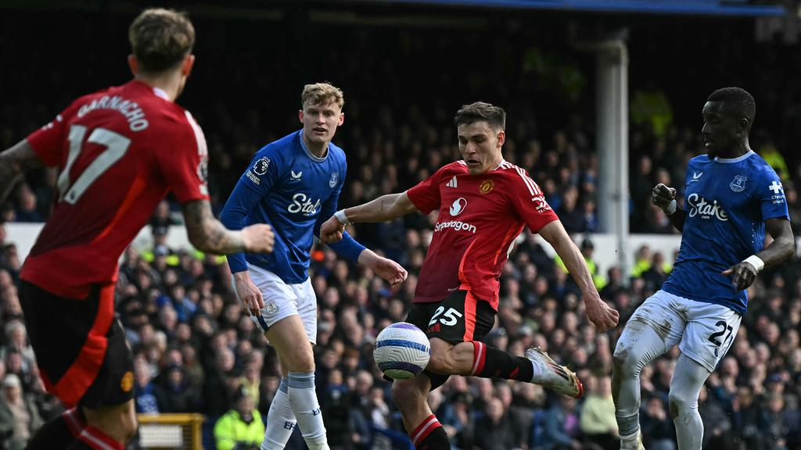
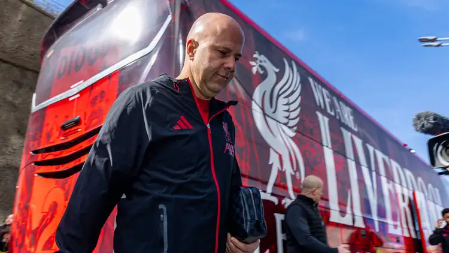
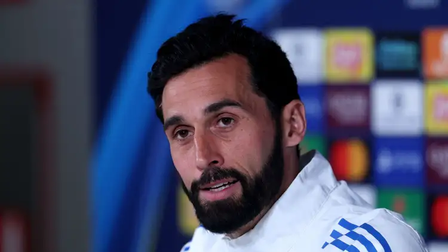

Tim nasional Republik Demokratik Kongo berhasil lolos ke putaran final Piala Dunia setelah absen selama sekitar 52 tahun.
Timnas Kongo tergabung dalam Grup 11 di Piala Dunia, bersama Portugal, Uzbekistan, dan Kolombia.
"Pada pertandingan pertama kami di Piala Dunia 2026, Cristiano Ronaldo akan menangis." kata Boudebou dalam pernyataan yang dipublikasikan situs Africa Top Sports.

Pergantian pemilik nomor punggung ikonik di Barcelona kembali menjadi sorotan. Kali ini, jersey nomor 10 yang sarat sejarah itu resmi dikenakan oleh talenta muda sensasional, Lamine Yamal.
Nomor tersebut bukan sekadar angka biasa. Sebelumnya, jersey itu pernah dikenakan oleh legenda seperti Ronaldinho dan kemudian diwariskan kepada Lionel Messi, yang menjadikannya simbol kehebatan di dunia sepak bola.
Kini, beban besar itu berada di pundak Yamal. Di usia yang masih sangat muda, ia sudah harus menghadapi ekspektasi tinggi dan perbandingan dengan Messi.

Manchester United bisa tersenyum lebar. Pemain yang ingin dibuang pada bursa transfer musim panas 2026 mendapat ketertarikan dari dua klub Liga Inggris yang siap berperang mendapatkannya.
Seperti diketahui Mu berniat merombak lini tengahnya di musim panas 2026 nanti. Selain akan melepas gelandang senior Casemiro, MU juga berniat melego gelandang bertahan Manuel Ugarte.

Fenway Sports Group (FSG), pemilik Liverpool, ingin memberi Arne Slot kesempatan untuk membalikkan keadaan musim depan, demikian dilaporkan The Athletic. Namun, media ternama tersebut menyisipkan sebuah 'tetapi' yang penting di balik kalimat tersebut.
Liverpool mengalami musim yang sangat bergejolak. Setelah meraih gelar juara pada tahun 2025, banyak hal yang tidak berjalan baik di bidang olahraga tahun ini. Sabtu lalu, Manchester City tanpa ampun menyingkirkan tim asuhan Slot dari Piala FA (4-0), dan klasemen Liga Premier juga belum berpihak pada Liverpool.

Real Madrid berhasil menyelesaikan transfer pertamanya untuk musim depan, setelah sang pemain menandatangani kontraknya dengan Los Blancos.
Menurut program "El Chiringuito" dari Spanyol, Nico Baz telah menandatangani kontrak kembalinya ke Real Madrid sebelum Paskah, dan Real Madrid terpaksa membayar 9 juta euro kepada Como sebagai nilai klausul pembelian kembali.
Banyak laporan menyebutkan bahwa Real Madrid mungkin akan meminjam kembali jasa Baz sebelum menjualnya ke salah satu klub Liga Premier Inggris, namun "El Chiringuito" menegaskan bahwa pemain tersebut akan kembali ke Los Blancos pada 1 Juli mendatang dan akan tetap bersama tim selama musim baru.